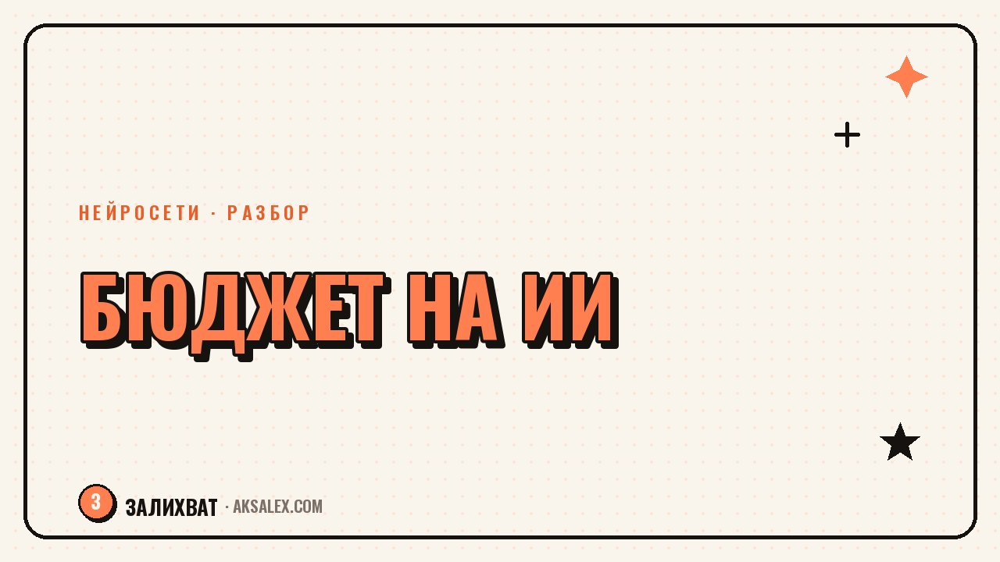

Сколько стоит вести блог с нейросетями

Вопрос бюджета на нейросети встаёт у каждого, кто ведёт блог дольше пары месяцев. Сначала хватает бесплатных версий, потом упираешься в лимиты - и приходится выбирать, за что платить, а без чего можно обойтись. Цены на сервисы меняются слишком часто, чтобы называть конкретные суммы, но структура расходов у большинства блогеров похожая. Разберём, из чего она складывается и как посчитать бюджет под свой формат контента.
Из чего складывается бюджет на нейросети
Расходы на нейросети для блога обычно делятся на несколько категорий, и не все они нужны одновременно. Текстовые модели для черновиков постов и сценариев, генераторы изображений для обложек, инструменты для монтажа и озвучки видео, сервисы для расшифровки эфиров в текст. Начинающему блогеру редко нужны все категории сразу.
Прежде чем платить за что-то новое, стоит понять, какая задача сейчас отнимает больше всего времени вручную - именно там оплаченный инструмент окупится быстрее всего.
Модели оплаты: что встречается на рынке
| Модель оплаты | Как это работает |
|---|---|
| Бесплатный тариф | Ограниченное число запросов или генераций в день/месяц |
| Фиксированная подписка | Ежемесячная плата за доступ, обычно с лимитами повыше |
| Оплата за результат | Платишь за каждую генерацию картинки, видео или минуту озвучки |
| Разовая покупка кредитов | Пополняешь баланс и тратишь его без привязки к месяцу |
Для блога с нерегулярной нагрузкой оплата за результат или разовые кредиты часто выгоднее фиксированной подписки - платишь только за то, что реально использовал, а не за месяц вперёд.
Как понять, что пора переходить на платный тариф
Сигнал обычно очевиден: бесплатных генераций или запросов стабильно не хватает до конца недели, и ты упираешься в лимит в самый неподходящий момент - например, перед публикацией.
Вопросы, которые стоит задать себе перед оплатой
- Как часто я реально упираюсь в бесплатный лимит - раз в неделю или почти каждый день
- Экономит ли этот инструмент время, которое можно перенаправить на съёмку или продажи
- Есть ли бесплатная альтернатива с похожим результатом, пусть и менее удобная
- Готов ли я платить за это регулярно, а не разово ради теста
Платный инструмент оправдан не тогда, когда он удобнее бесплатного сам по себе, а когда экономия времени заметно превышает его стоимость для твоего блога.
Частые ошибки в планировании бюджета
Самая частая ошибка - собрать пять-шесть подписок «на всякий случай» и пользоваться реально одной-двумя. Проверь список активных подписок хотя бы раз в квартал: если инструментом не пользовался месяц, скорее всего, он и не нужен в текущем формате.
- Оформлять подписку под разовую задачу вместо оплаты за результат
- Забывать отменять пробный период, который автоматически переходит в платный
- Копить несколько инструментов с похожей функцией вместо одного основного
- Не считать бюджет заранее и тратить хаотично по мере появления идей
- Экономить на инструменте, который реально закрывает узкое место в процессе
Последний пункт работает и в обратную сторону: если один платный инструмент явно ускоряет твою самую трудоёмкую задачу, экономия на нём часто обходится дороже потерянного времени.
Как считать бюджет под свой блог
Удобно завести простую таблицу: инструмент, задача, которую он закрывает, и периодичность использования. Раз в месяц или квартал пересматривай её - убирай то, чем не пользуешься, и добавляй то, что закрывает реальную боль в процессе.
Бюджет на нейросети не обязан расти линейно вместе с блогом. Иногда правильнее держать один хороший платный инструмент под ключевую задачу и закрывать остальное бесплатными вариантами, чем распылять деньги на подписки, которые дублируют друг друга.
Итог: бюджет под задачи, а не под моду
Не стоит подписываться на инструмент только потому, что о нём написали в чужом блоге. Начни с бесплатных версий, отследи, где реально не хватает возможностей, и переходи на платный тариф именно там. Такой подход экономит деньги и не даёт бюджету на нейросети незаметно вырасти до суммы, которая не окупается результатом.
Частые вопросы
С чего начать, если бюджета на нейросети совсем нет?
С бесплатных тарифов основных сервисов - для текста, картинок и базового монтажа их обычно достаточно на старте. Переходи на платные варианты только там, где бесплатного лимита стабильно не хватает.
Что выгоднее: подписка или оплата за результат?
Зависит от регулярности использования. Для стабильной ежедневной нагрузки чаще выгоднее подписка с более высоким лимитом, а для нерегулярных задач - оплата за конкретный результат или разовые кредиты.
Как не забыть отменить бесплатный пробный период?
Ставь напоминание за день-два до окончания пробного периода в календарь сразу при регистрации. Это самая частая причина случайных трат на инструменты, которыми в итоге не пользуются.
Нужно ли сразу покупать несколько инструментов под разные задачи?
Нет, лучше начинать с одного-двух под самые трудоёмкие задачи и добавлять новые только когда почувствуешь реальную нехватку возможностей, а не заранее про запас.
Как понять, что подписка на инструмент себя не окупает?
Посмотри, как часто ты им пользовался за последний месяц. Если открывал пару раз или не открывал совсем, а стоимость при этом заметна для бюджета блога - разумно отменить и вернуться позже, если понадобится.
а не вручную